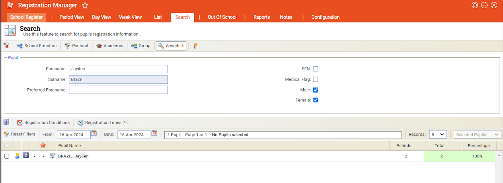

Steps and images provided by Steph
Checking your forms attendance data
- Go to Registration Manager and select search
- Search for individuals or for your whole form
- Set your date parameters as required

Steps and images provided by Steph
